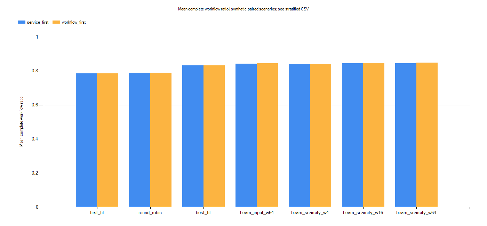
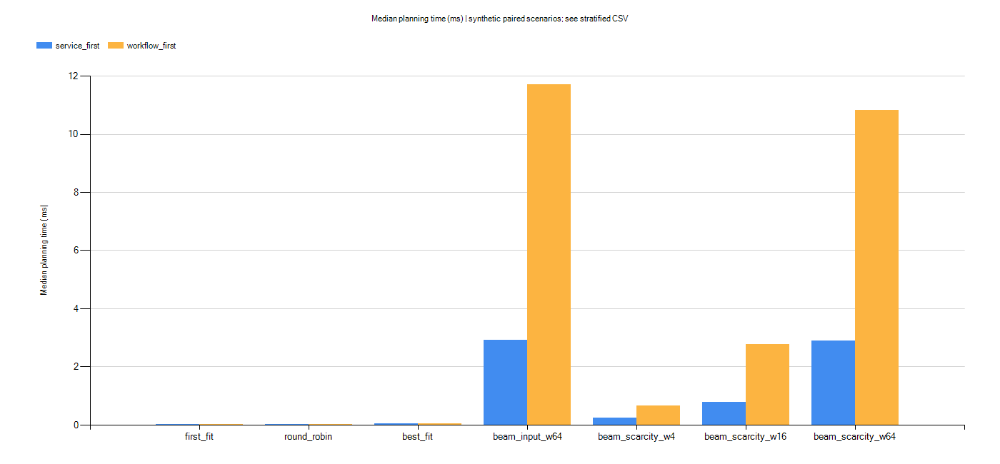

范围已确认为本机代码和仿真；真实Swarm与VxWorks部署未验收。
| item | status | evidence |
|---|---|---|
| 配置与精确检查 | PASS | C:\Users\86183\AppData\Local\Temp\iiot-git-handoff-0355dfae\iiot-platform-simulation\runs\study-20261021-104758-2e103686\project\verification\results.json |
| 最终集成检查 | PASS | C:\Users\86183\AppData\Local\Temp\iiot-git-handoff-0355dfae\iiot-platform-simulation\runs\study-20261021-104758-2e103686\project\verification\final-checks.json |
| 连续故障恢复 | PASS | C:\Users\86183\AppData\Local\Temp\iiot-git-handoff-0355dfae\iiot-platform-simulation\runs\study-20261021-104758-2e103686\report\continuous-check-results.json |
| 前端与HTTP接口 | PASS | C:\Users\86183\AppData\Local\Temp\iiot-git-handoff-0355dfae\iiot-platform-simulation\runs\study-20261021-104758-2e103686\report\ui-api-checks.json |
新增实验模式的完整业务链优先：完整业务数→服务数→部署时间→活跃节点数；服务数优先作为对照：服务数→部署时间→活跃节点数。演练台保留原有服务数优先默认模式。三个基础算法维持各自选择规则，以同一指标评价；接管固定健康部署，不能等同初始全局最优规划。
保留目标冲突反例：服务数优先3项服务/0条完整业务，完整链优先1项服务/1条完整业务。
| objective | paired_inputs | workflow_wins | workflow_ties | workflow_losses |
|---|---|---|---|---|
| service_first | 180 | 36 | 141 | 3 |
| workflow_first | 180 | 38 | 139 | 3 |
| service_scale | objective_cases | proven | not_proven | skipped |
|---|---|---|---|---|
| 4 | 120 | 120 | 0 | 0 |
| 8 | 120 | 50 | 70 | 0 |
| 12 | 120 | 0 | 0 | 120 |
{
"schema_version": 1,
"scenario_count": 180,
"measured_runs": 7560,
"measured_repetitions": 3,
"warmup_runs": 2520,
"seeds": [
11,
29,
47,
83,
101
],
"notice": "SYNTHETIC seeded scenarios. Same-input repeats measure JVM timing variability, not independent scenario samples. Exact gaps only when exhaustive and FIFO order identical. No universal optimality claim."
}相对First Fit，束搜索W64在74组配对输入/目标中完整业务链比例增加，6组减少。其余持平；不据此宣称普遍优势。
5个种子×4种拓扑（双链、分叉汇合、独立服务、随机DAG）×3种资源/能力配置×3种服务规模（4/8/12），共180组输入。每组两种目标、7种方法；同输入预热1次、测量3次。同输入重复只用于计时变化，不当作独立场景样本。结果为合成配置。
4服务精确求解最多50万状态/2秒；8服务最多10万状态/250毫秒；12服务不进行精确求解。只有完成穷举并且FIFO顺序一致时填写最优性主目标差距；其它留空。不同服务身份下不计算部署时间提升；所有原始方案和事件保留。


下方筛选不改变原始文件。
| profile | topology | service_scale | objective | method | seeds | ready_ratio_mean | workflow_ratio_mean | workflow_ratio_sd | deployment_seconds_mean | planning_median_ms |
|---|---|---|---|---|---|---|---|---|---|---|
| ample | chain | 4 | service_first | first_fit | 5 | 1 | 1 | 0 | 5.685 | 0.0032 |
| ample | chain | 4 | service_first | round_robin | 5 | 1 | 1 | 0 | 5.641 | 0.0036 |
| ample | chain | 4 | service_first | best_fit | 5 | 1 | 1 | 0 | 9.406 | 0.0191 |
| ample | chain | 4 | service_first | beam_input_w64 | 5 | 1 | 1 | 0 | 3.331 | 0.8202 |
| ample | chain | 4 | service_first | beam_scarcity_w4 | 5 | 1 | 1 | 0 | 3.591 | 0.098 |
| ample | chain | 4 | service_first | beam_scarcity_w16 | 5 | 1 | 1 | 0 | 3.391 | 0.3031 |
| ample | chain | 4 | service_first | beam_scarcity_w64 | 5 | 1 | 1 | 0 | 3.331 | 0.9788 |
| ample | chain | 4 | workflow_first | first_fit | 5 | 1 | 1 | 0 | 5.685 | 0.0029 |
| ample | chain | 4 | workflow_first | round_robin | 5 | 1 | 1 | 0 | 5.641 | 0.007 |
| ample | chain | 4 | workflow_first | best_fit | 5 | 1 | 1 | 0 | 9.406 | 0.0551 |
| ample | chain | 4 | workflow_first | beam_input_w64 | 5 | 1 | 1 | 0 | 3.331 | 3.134 |
| ample | chain | 4 | workflow_first | beam_scarcity_w4 | 5 | 1 | 1 | 0 | 3.591 | 0.2584 |
| ample | chain | 4 | workflow_first | beam_scarcity_w16 | 5 | 1 | 1 | 0 | 3.391 | 1.119 |
| ample | chain | 4 | workflow_first | beam_scarcity_w64 | 5 | 1 | 1 | 0 | 3.331 | 3.161 |
| ample | chain | 8 | service_first | first_fit | 5 | 1 | 1 | 0 | 12.38 | 0.007 |
| ample | chain | 8 | service_first | round_robin | 5 | 1 | 1 | 0 | 8.019 | 0.0087 |
| ample | chain | 8 | service_first | best_fit | 5 | 1 | 1 | 0 | 14.9 | 0.0527 |
| ample | chain | 8 | service_first | beam_input_w64 | 5 | 1 | 1 | 0 | 4.661 | 3.234 |
| ample | chain | 8 | service_first | beam_scarcity_w4 | 5 | 1 | 1 | 0 | 4.665 | 0.2354 |
| ample | chain | 8 | service_first | beam_scarcity_w16 | 5 | 1 | 1 | 0 | 4.714 | 0.8019 |
| ample | chain | 8 | service_first | beam_scarcity_w64 | 5 | 1 | 1 | 0 | 4.661 | 3.384 |
| ample | chain | 8 | workflow_first | first_fit | 5 | 1 | 1 | 0 | 12.38 | 0.0065 |
| ample | chain | 8 | workflow_first | round_robin | 5 | 1 | 1 | 0 | 8.019 | 0.0094 |
| ample | chain | 8 | workflow_first | best_fit | 5 | 1 | 1 | 0 | 14.9 | 0.0374 |
| ample | chain | 8 | workflow_first | beam_input_w64 | 5 | 1 | 1 | 0 | 4.661 | 19.95 |
| ample | chain | 8 | workflow_first | beam_scarcity_w4 | 5 | 1 | 1 | 0 | 4.665 | 0.8803 |
| ample | chain | 8 | workflow_first | beam_scarcity_w16 | 5 | 1 | 1 | 0 | 4.714 | 5.18 |
| ample | chain | 8 | workflow_first | beam_scarcity_w64 | 5 | 1 | 1 | 0 | 4.661 | 19.85 |
| ample | chain | 12 | service_first | first_fit | 5 | 1 | 1 | 0 | 15.64 | 0.0132 |
| ample | chain | 12 | service_first | round_robin | 5 | 1 | 1 | 0 | 11.19 | 0.0172 |
| ample | chain | 12 | service_first | best_fit | 5 | 1 | 1 | 0 | 20.72 | 0.0739 |
| ample | chain | 12 | service_first | beam_input_w64 | 5 | 1 | 1 | 0 | 6.505 | 6.555 |
| ample | chain | 12 | service_first | beam_scarcity_w4 | 5 | 1 | 1 | 0 | 6.723 | 0.3806 |
| ample | chain | 12 | service_first | beam_scarcity_w16 | 5 | 1 | 1 | 0 | 6.566 | 1.337 |
| ample | chain | 12 | service_first | beam_scarcity_w64 | 5 | 1 | 1 | 0 | 6.505 | 6.043 |
| ample | chain | 12 | workflow_first | first_fit | 5 | 1 | 1 | 0 | 15.64 | 0.0124 |
| ample | chain | 12 | workflow_first | round_robin | 5 | 1 | 1 | 0 | 11.19 | 0.0203 |
| ample | chain | 12 | workflow_first | best_fit | 5 | 1 | 1 | 0 | 20.72 | 0.0684 |
| ample | chain | 12 | workflow_first | beam_input_w64 | 5 | 1 | 1 | 0 | 6.505 | 47.46 |
| ample | chain | 12 | workflow_first | beam_scarcity_w4 | 5 | 1 | 1 | 0 | 6.723 | 1.94 |
| ample | chain | 12 | workflow_first | beam_scarcity_w16 | 5 | 1 | 1 | 0 | 6.566 | 10.54 |
| ample | chain | 12 | workflow_first | beam_scarcity_w64 | 5 | 1 | 1 | 0 | 6.505 | 46.2 |
| pressure | chain | 4 | service_first | first_fit | 5 | 1 | 1 | 0 | 5.462 | 0.005 |
| pressure | chain | 4 | service_first | round_robin | 5 | 1 | 1 | 0 | 3.852 | 0.006 |
| pressure | chain | 4 | service_first | best_fit | 5 | 1 | 1 | 0 | 5.141 | 0.0206 |
| pressure | chain | 4 | service_first | beam_input_w64 | 5 | 1 | 1 | 0 | 3.34 | 0.5772 |
| pressure | chain | 4 | service_first | beam_scarcity_w4 | 5 | 1 | 1 | 0 | 3.601 | 0.0923 |
| pressure | chain | 4 | service_first | beam_scarcity_w16 | 5 | 1 | 1 | 0 | 3.4 | 0.3408 |
| pressure | chain | 4 | service_first | beam_scarcity_w64 | 5 | 1 | 1 | 0 | 3.34 | 0.5874 |
| pressure | chain | 4 | workflow_first | first_fit | 5 | 1 | 1 | 0 | 5.462 | 0.0054 |
| pressure | chain | 4 | workflow_first | round_robin | 5 | 1 | 1 | 0 | 3.852 | 0.0065 |
| pressure | chain | 4 | workflow_first | best_fit | 5 | 1 | 1 | 0 | 5.141 | 0.0221 |
| pressure | chain | 4 | workflow_first | beam_input_w64 | 5 | 1 | 1 | 0 | 3.34 | 1.423 |
| pressure | chain | 4 | workflow_first | beam_scarcity_w4 | 5 | 1 | 1 | 0 | 3.601 | 0.2037 |
| pressure | chain | 4 | workflow_first | beam_scarcity_w16 | 5 | 1 | 1 | 0 | 3.4 | 0.7298 |
| pressure | chain | 4 | workflow_first | beam_scarcity_w64 | 5 | 1 | 1 | 0 | 3.34 | 1.496 |
| pressure | chain | 8 | service_first | first_fit | 5 | 0.75 | 0.5 | 0 | 5.462 | 0.0231 |
| pressure | chain | 8 | service_first | round_robin | 5 | 0.75 | 0.5 | 0 | 4.137 | 0.0183 |
| pressure | chain | 8 | service_first | best_fit | 5 | 0.75 | 0.5 | 0 | 5.672 | 0.0427 |
| pressure | chain | 8 | service_first | beam_input_w64 | 5 | 0.75 | 0.5 | 0 | 3.34 | 2.651 |
| pressure | chain | 8 | service_first | beam_scarcity_w4 | 5 | 0.75 | 0.5 | 0 | 3.601 | 0.227 |
| pressure | chain | 8 | service_first | beam_scarcity_w16 | 5 | 0.75 | 0.5 | 0 | 3.4 | 0.7191 |
| pressure | chain | 8 | service_first | beam_scarcity_w64 | 5 | 0.75 | 0.5 | 0 | 3.34 | 2.723 |
| pressure | chain | 8 | workflow_first | first_fit | 5 | 0.75 | 0.5 | 0 | 5.462 | 0.0238 |
| pressure | chain | 8 | workflow_first | round_robin | 5 | 0.75 | 0.5 | 0 | 4.137 | 0.0191 |
| pressure | chain | 8 | workflow_first | best_fit | 5 | 0.75 | 0.5 | 0 | 5.672 | 0.0642 |
| pressure | chain | 8 | workflow_first | beam_input_w64 | 5 | 0.75 | 0.5 | 0 | 3.34 | 9.45 |
| pressure | chain | 8 | workflow_first | beam_scarcity_w4 | 5 | 0.75 | 0.5 | 0 | 3.601 | 0.6442 |
| pressure | chain | 8 | workflow_first | beam_scarcity_w16 | 5 | 0.75 | 0.5 | 0 | 3.4 | 2.78 |
| pressure | chain | 8 | workflow_first | beam_scarcity_w64 | 5 | 0.75 | 0.5 | 0 | 3.34 | 9.84 |
| pressure | chain | 12 | service_first | first_fit | 5 | 0.6667 | 0.3333 | 0 | 5.791 | 0.0373 |
| pressure | chain | 12 | service_first | round_robin | 5 | 0.6667 | 0.3333 | 0 | 4.137 | 0.0329 |
| pressure | chain | 12 | service_first | best_fit | 5 | 0.6667 | 0.3333 | 0 | 5.762 | 0.0594 |
| pressure | chain | 12 | service_first | beam_input_w64 | 5 | 0.6667 | 0.3333 | 0 | 3.34 | 4.96 |
| pressure | chain | 12 | service_first | beam_scarcity_w4 | 5 | 0.6667 | 0.3333 | 0 | 3.601 | 0.3768 |
| pressure | chain | 12 | service_first | beam_scarcity_w16 | 5 | 0.6667 | 0.3333 | 0 | 3.4 | 1.286 |
| pressure | chain | 12 | service_first | beam_scarcity_w64 | 5 | 0.6667 | 0.3333 | 0 | 3.34 | 4.968 |
| pressure | chain | 12 | workflow_first | first_fit | 5 | 0.6667 | 0.3333 | 0 | 5.791 | 0.0337 |
| pressure | chain | 12 | workflow_first | round_robin | 5 | 0.6667 | 0.3333 | 0 | 4.137 | 0.0344 |
| pressure | chain | 12 | workflow_first | best_fit | 5 | 0.6667 | 0.3333 | 0 | 5.762 | 0.0648 |
| pressure | chain | 12 | workflow_first | beam_input_w64 | 5 | 0.6667 | 0.3333 | 0 | 3.34 | 24.17 |
| pressure | chain | 12 | workflow_first | beam_scarcity_w4 | 5 | 0.6667 | 0.3333 | 0 | 3.601 | 1.282 |
| pressure | chain | 12 | workflow_first | beam_scarcity_w16 | 5 | 0.6667 | 0.3333 | 0 | 3.4 | 6.201 |
| pressure | chain | 12 | workflow_first | beam_scarcity_w64 | 5 | 0.6667 | 0.3333 | 0 | 3.34 | 23.2 |
| gap | chain | 4 | service_first | first_fit | 5 | 0.95 | 0.9 | 0.2236 | 5.304 | 0.0067 |
| gap | chain | 4 | service_first | round_robin | 5 | 1 | 1 | 0 | 3.822 | 0.0071 |
| gap | chain | 4 | service_first | best_fit | 5 | 0.9 | 0.8 | 0.2739 | 4.737 | 0.0226 |
| gap | chain | 4 | service_first | beam_input_w64 | 5 | 1 | 1 | 0 | 3.34 | 0.2698 |
| gap | chain | 4 | service_first | beam_scarcity_w4 | 5 | 1 | 1 | 0 | 3.428 | 0.0881 |
| gap | chain | 4 | service_first | beam_scarcity_w16 | 5 | 1 | 1 | 0 | 3.34 | 0.1976 |
| gap | chain | 4 | service_first | beam_scarcity_w64 | 5 | 1 | 1 | 0 | 3.34 | 0.2915 |
| gap | chain | 4 | workflow_first | first_fit | 5 | 0.95 | 0.9 | 0.2236 | 5.304 | 0.0086 |
| gap | chain | 4 | workflow_first | round_robin | 5 | 1 | 1 | 0 | 3.822 | 0.0106 |
| gap | chain | 4 | workflow_first | best_fit | 5 | 0.9 | 0.8 | 0.2739 | 4.737 | 0.0332 |
| gap | chain | 4 | workflow_first | beam_input_w64 | 5 | 1 | 1 | 0 | 3.34 | 0.6544 |
| gap | chain | 4 | workflow_first | beam_scarcity_w4 | 5 | 1 | 1 | 0 | 3.428 | 0.1377 |
| gap | chain | 4 | workflow_first | beam_scarcity_w16 | 5 | 1 | 1 | 0 | 3.34 | 0.3582 |
| gap | chain | 4 | workflow_first | beam_scarcity_w64 | 5 | 1 | 1 | 0 | 3.34 | 0.6118 |
| gap | chain | 8 | service_first | first_fit | 5 | 0.725 | 0.45 | 0.1118 | 5.584 | 0.0269 |
| gap | chain | 8 | service_first | round_robin | 5 | 0.75 | 0.5 | 0 | 4.102 | 0.0236 |
| gap | chain | 8 | service_first | best_fit | 5 | 0.7 | 0.4 | 0.1369 | 5.242 | 0.0471 |
| gap | chain | 8 | service_first | beam_input_w64 | 5 | 0.75 | 0.5 | 0 | 3.221 | 1.953 |
| gap | chain | 8 | service_first | beam_scarcity_w4 | 5 | 0.75 | 0.5 | 0 | 3.428 | 0.2097 |
| gap | chain | 8 | service_first | beam_scarcity_w16 | 5 | 0.75 | 0.5 | 0 | 3.286 | 0.6201 |
| gap | chain | 8 | service_first | beam_scarcity_w64 | 5 | 0.75 | 0.5 | 0 | 3.221 | 2.133 |
| gap | chain | 8 | workflow_first | first_fit | 5 | 0.725 | 0.45 | 0.1118 | 5.584 | 0.0296 |
| gap | chain | 8 | workflow_first | round_robin | 5 | 0.75 | 0.5 | 0 | 4.102 | 0.0233 |
| gap | chain | 8 | workflow_first | best_fit | 5 | 0.7 | 0.4 | 0.1369 | 5.242 | 0.0508 |
| gap | chain | 8 | workflow_first | beam_input_w64 | 5 | 0.75 | 0.5 | 0 | 3.221 | 5.785 |
| gap | chain | 8 | workflow_first | beam_scarcity_w4 | 5 | 0.75 | 0.5 | 0 | 3.428 | 0.4132 |
| gap | chain | 8 | workflow_first | beam_scarcity_w16 | 5 | 0.75 | 0.5 | 0 | 3.34 | 1.412 |
| gap | chain | 8 | workflow_first | beam_scarcity_w64 | 5 | 0.75 | 0.5 | 0 | 3.221 | 5.807 |
| gap | chain | 12 | service_first | first_fit | 5 | 0.65 | 0.3 | 0.07454 | 5.798 | 0.0492 |
| gap | chain | 12 | service_first | round_robin | 5 | 0.6667 | 0.3333 | 0 | 4.102 | 0.0475 |
| gap | chain | 12 | service_first | best_fit | 5 | 0.6333 | 0.2667 | 0.09129 | 5.332 | 0.0903 |
| gap | chain | 12 | service_first | beam_input_w64 | 5 | 0.6667 | 0.3333 | 0 | 3.221 | 3.794 |
| gap | chain | 12 | service_first | beam_scarcity_w4 | 5 | 0.6667 | 0.3333 | 0 | 3.428 | 0.3299 |
| gap | chain | 12 | service_first | beam_scarcity_w16 | 5 | 0.6667 | 0.3333 | 0 | 3.302 | 1.019 |
| gap | chain | 12 | service_first | beam_scarcity_w64 | 5 | 0.6667 | 0.3333 | 0 | 3.221 | 3.951 |
| gap | chain | 12 | workflow_first | first_fit | 5 | 0.65 | 0.3 | 0.07454 | 5.798 | 0.0499 |
| gap | chain | 12 | workflow_first | round_robin | 5 | 0.6667 | 0.3333 | 0 | 4.102 | 0.0497 |
| gap | chain | 12 | workflow_first | best_fit | 5 | 0.6333 | 0.2667 | 0.09129 | 5.332 | 0.0768 |
| gap | chain | 12 | workflow_first | beam_input_w64 | 5 | 0.6667 | 0.3333 | 0 | 3.221 | 13.56 |
| gap | chain | 12 | workflow_first | beam_scarcity_w4 | 5 | 0.6667 | 0.3333 | 0 | 3.428 | 0.7111 |
| gap | chain | 12 | workflow_first | beam_scarcity_w16 | 5 | 0.6667 | 0.3333 | 0 | 3.356 | 2.744 |
| gap | chain | 12 | workflow_first | beam_scarcity_w64 | 5 | 0.6667 | 0.3333 | 0 | 3.221 | 13.28 |
| ample | fork_join | 4 | service_first | first_fit | 5 | 1 | 1 | 0 | 4.371 | 0.0031 |
| ample | fork_join | 4 | service_first | round_robin | 5 | 1 | 1 | 0 | 6.941 | 0.0033 |
| ample | fork_join | 4 | service_first | best_fit | 5 | 1 | 1 | 0 | 6.708 | 0.0217 |
| ample | fork_join | 4 | service_first | beam_input_w64 | 5 | 1 | 1 | 0 | 2.901 | 1.067 |
| ample | fork_join | 4 | service_first | beam_scarcity_w4 | 5 | 1 | 1 | 0 | 2.901 | 0.1071 |
| ample | fork_join | 4 | service_first | beam_scarcity_w16 | 5 | 1 | 1 | 0 | 2.901 | 0.2921 |
| ample | fork_join | 4 | service_first | beam_scarcity_w64 | 5 | 1 | 1 | 0 | 2.901 | 1.048 |
| ample | fork_join | 4 | workflow_first | first_fit | 5 | 1 | 1 | 0 | 4.371 | 0.0029 |
| ample | fork_join | 4 | workflow_first | round_robin | 5 | 1 | 1 | 0 | 6.941 | 0.0032 |
| ample | fork_join | 4 | workflow_first | best_fit | 5 | 1 | 1 | 0 | 6.708 | 0.0218 |
| ample | fork_join | 4 | workflow_first | beam_input_w64 | 5 | 1 | 1 | 0 | 2.901 | 4.019 |
| ample | fork_join | 4 | workflow_first | beam_scarcity_w4 | 5 | 1 | 1 | 0 | 2.901 | 0.323 |
| ample | fork_join | 4 | workflow_first | beam_scarcity_w16 | 5 | 1 | 1 | 0 | 2.901 | 1.265 |
| ample | fork_join | 4 | workflow_first | beam_scarcity_w64 | 5 | 1 | 1 | 0 | 2.901 | 4.304 |
| ample | fork_join | 8 | service_first | first_fit | 5 | 1 | 1 | 0 | 8.611 | 0.0069 |
| ample | fork_join | 8 | service_first | round_robin | 5 | 1 | 1 | 0 | 6.941 | 0.0081 |
| ample | fork_join | 8 | service_first | best_fit | 5 | 1 | 1 | 0 | 12.08 | 0.0432 |
| ample | fork_join | 8 | service_first | beam_input_w64 | 5 | 1 | 1 | 0 | 4.123 | 3.608 |
| ample | fork_join | 8 | service_first | beam_scarcity_w4 | 5 | 1 | 1 | 0 | 4.357 | 0.2568 |
| ample | fork_join | 8 | service_first | beam_scarcity_w16 | 5 | 1 | 1 | 0 | 4.252 | 0.8231 |
| ample | fork_join | 8 | service_first | beam_scarcity_w64 | 5 | 1 | 1 | 0 | 4.123 | 3.592 |
| ample | fork_join | 8 | workflow_first | first_fit | 5 | 1 | 1 | 0 | 8.611 | 0.0053 |
| ample | fork_join | 8 | workflow_first | round_robin | 5 | 1 | 1 | 0 | 6.941 | 0.0084 |
| ample | fork_join | 8 | workflow_first | best_fit | 5 | 1 | 1 | 0 | 12.08 | 0.0367 |
| ample | fork_join | 8 | workflow_first | beam_input_w64 | 5 | 1 | 1 | 0 | 4.123 | 26.54 |
| ample | fork_join | 8 | workflow_first | beam_scarcity_w4 | 5 | 1 | 1 | 0 | 4.357 | 1.224 |
| ample | fork_join | 8 | workflow_first | beam_scarcity_w16 | 5 | 1 | 1 | 0 | 4.252 | 6.335 |
| ample | fork_join | 8 | workflow_first | beam_scarcity_w64 | 5 | 1 | 1 | 0 | 4.123 | 26.74 |
| ample | fork_join | 12 | service_first | first_fit | 5 | 1 | 1 | 0 | 14.24 | 0.0075 |
| ample | fork_join | 12 | service_first | round_robin | 5 | 1 | 1 | 0 | 9.168 | 0.0116 |
| ample | fork_join | 12 | service_first | best_fit | 5 | 1 | 1 | 0 | 16.03 | 0.0726 |
| ample | fork_join | 12 | service_first | beam_input_w64 | 5 | 1 | 1 | 0 | 4.802 | 6.5 |
| ample | fork_join | 12 | service_first | beam_scarcity_w4 | 5 | 1 | 1 | 0 | 5.965 | 0.39 |
| ample | fork_join | 12 | service_first | beam_scarcity_w16 | 5 | 1 | 1 | 0 | 5.019 | 1.454 |
| ample | fork_join | 12 | service_first | beam_scarcity_w64 | 5 | 1 | 1 | 0 | 4.802 | 6.4 |
| ample | fork_join | 12 | workflow_first | first_fit | 5 | 1 | 1 | 0 | 14.24 | 0.009 |
| ample | fork_join | 12 | workflow_first | round_robin | 5 | 1 | 1 | 0 | 9.168 | 0.0148 |
| ample | fork_join | 12 | workflow_first | best_fit | 5 | 1 | 1 | 0 | 16.03 | 0.08 |
| ample | fork_join | 12 | workflow_first | beam_input_w64 | 5 | 1 | 1 | 0 | 4.802 | 67.38 |
| ample | fork_join | 12 | workflow_first | beam_scarcity_w4 | 5 | 1 | 1 | 0 | 5.965 | 2.837 |
| ample | fork_join | 12 | workflow_first | beam_scarcity_w16 | 5 | 1 | 1 | 0 | 5.019 | 15.03 |
| ample | fork_join | 12 | workflow_first | beam_scarcity_w64 | 5 | 1 | 1 | 0 | 4.802 | 66.89 |
| pressure | fork_join | 4 | service_first | first_fit | 5 | 1 | 1 | 0 | 5.3 | 0.0053 |
| pressure | fork_join | 4 | service_first | round_robin | 5 | 1 | 1 | 0 | 4.42 | 0.0067 |
| pressure | fork_join | 4 | service_first | best_fit | 5 | 1 | 1 | 0 | 5.139 | 0.0206 |
| pressure | fork_join | 4 | service_first | beam_input_w64 | 5 | 1 | 1 | 0 | 2.901 | 0.7433 |
| pressure | fork_join | 4 | service_first | beam_scarcity_w4 | 5 | 1 | 1 | 0 | 2.901 | 0.1025 |
| pressure | fork_join | 4 | service_first | beam_scarcity_w16 | 5 | 1 | 1 | 0 | 2.901 | 0.2764 |
| pressure | fork_join | 4 | service_first | beam_scarcity_w64 | 5 | 1 | 1 | 0 | 2.901 | 0.717 |
| pressure | fork_join | 4 | workflow_first | first_fit | 5 | 1 | 1 | 0 | 5.3 | 0.0061 |
| pressure | fork_join | 4 | workflow_first | round_robin | 5 | 1 | 1 | 0 | 4.42 | 0.0073 |
| pressure | fork_join | 4 | workflow_first | best_fit | 5 | 1 | 1 | 0 | 5.139 | 0.0244 |
| pressure | fork_join | 4 | workflow_first | beam_input_w64 | 5 | 1 | 1 | 0 | 2.901 | 2.363 |
| pressure | fork_join | 4 | workflow_first | beam_scarcity_w4 | 5 | 1 | 1 | 0 | 2.901 | 0.2511 |
| pressure | fork_join | 4 | workflow_first | beam_scarcity_w16 | 5 | 1 | 1 | 0 | 2.901 | 1.046 |
| pressure | fork_join | 4 | workflow_first | beam_scarcity_w64 | 5 | 1 | 1 | 0 | 2.901 | 2.542 |
| pressure | fork_join | 8 | service_first | first_fit | 5 | 0.875 | 0.5 | 0 | 5.3 | 0.0146 |
| pressure | fork_join | 8 | service_first | round_robin | 5 | 0.875 | 0.5 | 0 | 4.42 | 0.0155 |
| pressure | fork_join | 8 | service_first | best_fit | 5 | 1 | 1 | 0 | 8.109 | 0.0415 |
| pressure | fork_join | 8 | service_first | beam_input_w64 | 5 | 1 | 1 | 0 | 4.856 | 2.945 |
| pressure | fork_join | 8 | service_first | beam_scarcity_w4 | 5 | 1 | 1 | 0 | 5.215 | 0.2363 |
| pressure | fork_join | 8 | service_first | beam_scarcity_w16 | 5 | 1 | 1 | 0 | 5.207 | 0.8356 |
| pressure | fork_join | 8 | service_first | beam_scarcity_w64 | 5 | 1 | 1 | 0 | 4.856 | 2.854 |
| pressure | fork_join | 8 | workflow_first | first_fit | 5 | 0.875 | 0.5 | 0 | 5.3 | 0.0163 |
| pressure | fork_join | 8 | workflow_first | round_robin | 5 | 0.875 | 0.5 | 0 | 4.42 | 0.0156 |
| pressure | fork_join | 8 | workflow_first | best_fit | 5 | 1 | 1 | 0 | 8.109 | 0.0451 |
| pressure | fork_join | 8 | workflow_first | beam_input_w64 | 5 | 1 | 1 | 0 | 4.856 | 18.13 |
| pressure | fork_join | 8 | workflow_first | beam_scarcity_w4 | 5 | 1 | 1 | 0 | 5.215 | 0.9893 |
| pressure | fork_join | 8 | workflow_first | beam_scarcity_w16 | 5 | 1 | 1 | 0 | 5.207 | 4.531 |
| pressure | fork_join | 8 | workflow_first | beam_scarcity_w64 | 5 | 1 | 1 | 0 | 4.856 | 16.77 |
| pressure | fork_join | 12 | service_first | first_fit | 5 | 0.8333 | 0.3333 | 0 | 5.3 | 0.0234 |
| pressure | fork_join | 12 | service_first | round_robin | 5 | 0.8333 | 0.3333 | 0 | 4.579 | 0.027 |
| pressure | fork_join | 12 | service_first | best_fit | 5 | 0.9 | 0.6667 | 0 | 8.7 | 0.0684 |
| pressure | fork_join | 12 | service_first | beam_input_w64 | 5 | 0.9167 | 0.6667 | 0 | 4.902 | 4.736 |
| pressure | fork_join | 12 | service_first | beam_scarcity_w4 | 5 | 0.9 | 0.6667 | 0 | 5.215 | 0.3608 |
| pressure | fork_join | 12 | service_first | beam_scarcity_w16 | 5 | 0.9167 | 0.6667 | 0 | 5.253 | 1.25 |
| pressure | fork_join | 12 | service_first | beam_scarcity_w64 | 5 | 0.9167 | 0.6667 | 0 | 4.902 | 5.026 |
| pressure | fork_join | 12 | workflow_first | first_fit | 5 | 0.8333 | 0.3333 | 0 | 5.3 | 0.0253 |
| pressure | fork_join | 12 | workflow_first | round_robin | 5 | 0.8333 | 0.3333 | 0 | 4.579 | 0.0313 |
| pressure | fork_join | 12 | workflow_first | best_fit | 5 | 0.9 | 0.6667 | 0 | 8.7 | 0.0687 |
| pressure | fork_join | 12 | workflow_first | beam_input_w64 | 5 | 0.9167 | 0.6667 | 0 | 4.902 | 37.22 |
| pressure | fork_join | 12 | workflow_first | beam_scarcity_w4 | 5 | 0.9 | 0.6667 | 0 | 5.215 | 1.714 |
| pressure | fork_join | 12 | workflow_first | beam_scarcity_w16 | 5 | 0.9167 | 0.6667 | 0 | 5.253 | 8.831 |
| pressure | fork_join | 12 | workflow_first | beam_scarcity_w64 | 5 | 0.9167 | 0.6667 | 0 | 4.902 | 36.55 |
| gap | fork_join | 4 | service_first | first_fit | 5 | 1 | 1 | 0 | 5.3 | 0.0054 |
| gap | fork_join | 4 | service_first | round_robin | 5 | 1 | 1 | 0 | 4.395 | 0.0068 |
| gap | fork_join | 4 | service_first | best_fit | 5 | 1 | 1 | 0 | 3.742 | 0.0227 |
| gap | fork_join | 4 | service_first | beam_input_w64 | 5 | 1 | 1 | 0 | 2.926 | 0.3008 |
| gap | fork_join | 4 | service_first | beam_scarcity_w4 | 5 | 1 | 1 | 0 | 2.926 | 0.0959 |
| gap | fork_join | 4 | service_first | beam_scarcity_w16 | 5 | 1 | 1 | 0 | 2.926 | 0.2232 |
| gap | fork_join | 4 | service_first | beam_scarcity_w64 | 5 | 1 | 1 | 0 | 2.926 | 0.3567 |
| gap | fork_join | 4 | workflow_first | first_fit | 5 | 1 | 1 | 0 | 5.3 | 0.0057 |
| gap | fork_join | 4 | workflow_first | round_robin | 5 | 1 | 1 | 0 | 4.395 | 0.007 |
| gap | fork_join | 4 | workflow_first | best_fit | 5 | 1 | 1 | 0 | 3.742 | 0.0261 |
| gap | fork_join | 4 | workflow_first | beam_input_w64 | 5 | 1 | 1 | 0 | 2.926 | 0.6768 |
| gap | fork_join | 4 | workflow_first | beam_scarcity_w4 | 5 | 1 | 1 | 0 | 2.926 | 0.1751 |
| gap | fork_join | 4 | workflow_first | beam_scarcity_w16 | 5 | 1 | 1 | 0 | 2.926 | 0.557 |
| gap | fork_join | 4 | workflow_first | beam_scarcity_w64 | 5 | 1 | 1 | 0 | 2.926 | 0.9353 |
| gap | fork_join | 8 | service_first | first_fit | 5 | 0.875 | 0.5 | 0 | 5.3 | 0.0141 |
| gap | fork_join | 8 | service_first | round_robin | 5 | 0.875 | 0.5 | 0 | 4.675 | 0.0209 |
| gap | fork_join | 8 | service_first | best_fit | 5 | 0.9 | 0.6 | 0.2236 | 5.483 | 0.0523 |
| gap | fork_join | 8 | service_first | beam_input_w64 | 5 | 0.9 | 0.6 | 0.2236 | 3.189 | 2.2 |
| gap | fork_join | 8 | service_first | beam_scarcity_w4 | 5 | 0.875 | 0.5 | 0 | 2.926 | 0.2249 |
| gap | fork_join | 8 | service_first | beam_scarcity_w16 | 5 | 0.9 | 0.6 | 0.2236 | 3.253 | 0.6801 |
| gap | fork_join | 8 | service_first | beam_scarcity_w64 | 5 | 0.9 | 0.6 | 0.2236 | 3.189 | 2.228 |
| gap | fork_join | 8 | workflow_first | first_fit | 5 | 0.875 | 0.5 | 0 | 5.3 | 0.0129 |
| gap | fork_join | 8 | workflow_first | round_robin | 5 | 0.875 | 0.5 | 0 | 4.675 | 0.0194 |
| gap | fork_join | 8 | workflow_first | best_fit | 5 | 0.9 | 0.6 | 0.2236 | 5.483 | 0.0445 |
| gap | fork_join | 8 | workflow_first | beam_input_w64 | 5 | 0.9 | 0.6 | 0.2236 | 3.189 | 8.745 |
| gap | fork_join | 8 | workflow_first | beam_scarcity_w4 | 5 | 0.875 | 0.5 | 0 | 2.926 | 0.5706 |
| gap | fork_join | 8 | workflow_first | beam_scarcity_w16 | 5 | 0.9 | 0.6 | 0.2236 | 3.253 | 2.397 |
| gap | fork_join | 8 | workflow_first | beam_scarcity_w64 | 5 | 0.9 | 0.6 | 0.2236 | 3.189 | 8.798 |
| gap | fork_join | 12 | service_first | first_fit | 5 | 0.8333 | 0.3333 | 0 | 5.905 | 0.0296 |
| gap | fork_join | 12 | service_first | round_robin | 5 | 0.8167 | 0.3333 | 0 | 4.87 | 0.0366 |
| gap | fork_join | 12 | service_first | best_fit | 5 | 0.8333 | 0.4 | 0.1491 | 6.807 | 0.0693 |
| gap | fork_join | 12 | service_first | beam_input_w64 | 5 | 0.8333 | 0.3333 | 0 | 3.715 | 4.115 |
| gap | fork_join | 12 | service_first | beam_scarcity_w4 | 5 | 0.8333 | 0.3333 | 0 | 3.853 | 0.3656 |
| gap | fork_join | 12 | service_first | beam_scarcity_w16 | 5 | 0.8333 | 0.3333 | 0 | 3.815 | 1.11 |
| gap | fork_join | 12 | service_first | beam_scarcity_w64 | 5 | 0.8333 | 0.3333 | 0 | 3.715 | 4.15 |
| gap | fork_join | 12 | workflow_first | first_fit | 5 | 0.8333 | 0.3333 | 0 | 5.905 | 0.0315 |
| gap | fork_join | 12 | workflow_first | round_robin | 5 | 0.8167 | 0.3333 | 0 | 4.87 | 0.0354 |
| gap | fork_join | 12 | workflow_first | best_fit | 5 | 0.8333 | 0.4 | 0.1491 | 6.807 | 0.0725 |
| gap | fork_join | 12 | workflow_first | beam_input_w64 | 5 | 0.8333 | 0.4 | 0.1491 | 3.868 | 22.19 |
| gap | fork_join | 12 | workflow_first | beam_scarcity_w4 | 5 | 0.8333 | 0.3333 | 0 | 3.853 | 1.075 |
| gap | fork_join | 12 | workflow_first | beam_scarcity_w16 | 5 | 0.8167 | 0.4 | 0.1491 | 3.961 | 5.306 |
| gap | fork_join | 12 | workflow_first | beam_scarcity_w64 | 5 | 0.8333 | 0.4 | 0.1491 | 3.868 | 22.03 |
| ample | independent | 4 | service_first | first_fit | 5 | 1 | 1 | 0 | 4.371 | 0.0029 |
| ample | independent | 4 | service_first | round_robin | 5 | 1 | 1 | 0 | 4.872 | 0.003 |
| ample | independent | 4 | service_first | best_fit | 5 | 1 | 1 | 0 | 4.695 | 0.0209 |
| ample | independent | 4 | service_first | beam_input_w64 | 5 | 1 | 1 | 0 | 2.326 | 1.042 |
| ample | independent | 4 | service_first | beam_scarcity_w4 | 5 | 1 | 1 | 0 | 2.326 | 0.1133 |
| ample | independent | 4 | service_first | beam_scarcity_w16 | 5 | 1 | 1 | 0 | 2.326 | 0.3133 |
| ample | independent | 4 | service_first | beam_scarcity_w64 | 5 | 1 | 1 | 0 | 2.326 | 0.9949 |
| ample | independent | 4 | workflow_first | first_fit | 5 | 1 | 1 | 0 | 4.371 | 0.0032 |
| ample | independent | 4 | workflow_first | round_robin | 5 | 1 | 1 | 0 | 4.872 | 0.0042 |
| ample | independent | 4 | workflow_first | best_fit | 5 | 1 | 1 | 0 | 4.695 | 0.0189 |
| ample | independent | 4 | workflow_first | beam_input_w64 | 5 | 1 | 1 | 0 | 2.326 | 3.084 |
| ample | independent | 4 | workflow_first | beam_scarcity_w4 | 5 | 1 | 1 | 0 | 2.326 | 0.2465 |
| ample | independent | 4 | workflow_first | beam_scarcity_w16 | 5 | 1 | 1 | 0 | 2.326 | 0.9187 |
| ample | independent | 4 | workflow_first | beam_scarcity_w64 | 5 | 1 | 1 | 0 | 2.326 | 2.708 |
| ample | independent | 8 | service_first | first_fit | 5 | 1 | 1 | 0 | 8.611 | 0.0051 |
| ample | independent | 8 | service_first | round_robin | 5 | 1 | 1 | 0 | 4.997 | 0.008 |
| ample | independent | 8 | service_first | best_fit | 5 | 1 | 1 | 0 | 6.06 | 0.041 |
| ample | independent | 8 | service_first | beam_input_w64 | 5 | 1 | 1 | 0 | 3.175 | 3.637 |
| ample | independent | 8 | service_first | beam_scarcity_w4 | 5 | 1 | 1 | 0 | 3.111 | 0.2653 |
| ample | independent | 8 | service_first | beam_scarcity_w16 | 5 | 1 | 1 | 0 | 3.111 | 0.9727 |
| ample | independent | 8 | service_first | beam_scarcity_w64 | 5 | 1 | 1 | 0 | 3.111 | 3.666 |
| ample | independent | 8 | workflow_first | first_fit | 5 | 1 | 1 | 0 | 8.611 | 0.005 |
| ample | independent | 8 | workflow_first | round_robin | 5 | 1 | 1 | 0 | 4.997 | 0.0072 |
| ample | independent | 8 | workflow_first | best_fit | 5 | 1 | 1 | 0 | 6.06 | 0.0406 |
| ample | independent | 8 | workflow_first | beam_input_w64 | 5 | 1 | 1 | 0 | 3.175 | 15.28 |
| ample | independent | 8 | workflow_first | beam_scarcity_w4 | 5 | 1 | 1 | 0 | 3.111 | 0.7654 |
| ample | independent | 8 | workflow_first | beam_scarcity_w16 | 5 | 1 | 1 | 0 | 3.111 | 3.699 |
| ample | independent | 8 | workflow_first | beam_scarcity_w64 | 5 | 1 | 1 | 0 | 3.111 | 14.83 |
| ample | independent | 12 | service_first | first_fit | 5 | 1 | 1 | 0 | 10.69 | 0.0065 |
| ample | independent | 12 | service_first | round_robin | 5 | 1 | 1 | 0 | 5.528 | 0.0128 |
| ample | independent | 12 | service_first | best_fit | 5 | 1 | 1 | 0 | 7.059 | 0.0742 |
| ample | independent | 12 | service_first | beam_input_w64 | 5 | 1 | 1 | 0 | 3.566 | 6.834 |
| ample | independent | 12 | service_first | beam_scarcity_w4 | 5 | 1 | 1 | 0 | 3.449 | 0.3822 |
| ample | independent | 12 | service_first | beam_scarcity_w16 | 5 | 1 | 1 | 0 | 3.449 | 1.514 |
| ample | independent | 12 | service_first | beam_scarcity_w64 | 5 | 1 | 1 | 0 | 3.449 | 6.991 |
| ample | independent | 12 | workflow_first | first_fit | 5 | 1 | 1 | 0 | 10.69 | 0.0071 |
| ample | independent | 12 | workflow_first | round_robin | 5 | 1 | 1 | 0 | 5.528 | 0.0129 |
| ample | independent | 12 | workflow_first | best_fit | 5 | 1 | 1 | 0 | 7.059 | 0.0646 |
| ample | independent | 12 | workflow_first | beam_input_w64 | 5 | 1 | 1 | 0 | 3.566 | 36.52 |
| ample | independent | 12 | workflow_first | beam_scarcity_w4 | 5 | 1 | 1 | 0 | 3.449 | 1.436 |
| ample | independent | 12 | workflow_first | beam_scarcity_w16 | 5 | 1 | 1 | 0 | 3.449 | 8.105 |
| ample | independent | 12 | workflow_first | beam_scarcity_w64 | 5 | 1 | 1 | 0 | 3.449 | 36.75 |
| pressure | independent | 4 | service_first | first_fit | 5 | 1 | 1 | 0 | 3.255 | 0.0046 |
| pressure | independent | 4 | service_first | round_robin | 5 | 1 | 1 | 0 | 2.807 | 0.006 |
| pressure | independent | 4 | service_first | best_fit | 5 | 1 | 1 | 0 | 3.255 | 0.0216 |
| pressure | independent | 4 | service_first | beam_input_w64 | 5 | 1 | 1 | 0 | 2.326 | 0.7497 |
| pressure | independent | 4 | service_first | beam_scarcity_w4 | 5 | 1 | 1 | 0 | 2.326 | 0.1053 |
| pressure | independent | 4 | service_first | beam_scarcity_w16 | 5 | 1 | 1 | 0 | 2.326 | 0.3146 |
| pressure | independent | 4 | service_first | beam_scarcity_w64 | 5 | 1 | 1 | 0 | 2.326 | 0.797 |
| pressure | independent | 4 | workflow_first | first_fit | 5 | 1 | 1 | 0 | 3.255 | 0.0048 |
| pressure | independent | 4 | workflow_first | round_robin | 5 | 1 | 1 | 0 | 2.807 | 0.0072 |
| pressure | independent | 4 | workflow_first | best_fit | 5 | 1 | 1 | 0 | 3.255 | 0.0219 |
| pressure | independent | 4 | workflow_first | beam_input_w64 | 5 | 1 | 1 | 0 | 2.326 | 1.839 |
| pressure | independent | 4 | workflow_first | beam_scarcity_w4 | 5 | 1 | 1 | 0 | 2.326 | 0.2057 |
| pressure | independent | 4 | workflow_first | beam_scarcity_w16 | 5 | 1 | 1 | 0 | 2.326 | 0.7935 |
| pressure | independent | 4 | workflow_first | beam_scarcity_w64 | 5 | 1 | 1 | 0 | 2.326 | 2.041 |
| pressure | independent | 8 | service_first | first_fit | 5 | 0.875 | 0.875 | 0 | 4.007 | 0.013 |
| pressure | independent | 8 | service_first | round_robin | 5 | 0.875 | 0.875 | 0 | 2.982 | 0.0143 |
| pressure | independent | 8 | service_first | best_fit | 5 | 1 | 1 | 0 | 3.835 | 0.0398 |
| pressure | independent | 8 | service_first | beam_input_w64 | 5 | 1 | 1 | 0 | 3.184 | 2.894 |
| pressure | independent | 8 | service_first | beam_scarcity_w4 | 5 | 1 | 1 | 0 | 3.12 | 0.2356 |
| pressure | independent | 8 | service_first | beam_scarcity_w16 | 5 | 1 | 1 | 0 | 3.12 | 0.7452 |
| pressure | independent | 8 | service_first | beam_scarcity_w64 | 5 | 1 | 1 | 0 | 3.12 | 2.926 |
| pressure | independent | 8 | workflow_first | first_fit | 5 | 0.875 | 0.875 | 0 | 4.007 | 0.0145 |
| pressure | independent | 8 | workflow_first | round_robin | 5 | 0.875 | 0.875 | 0 | 2.982 | 0.0127 |
| pressure | independent | 8 | workflow_first | best_fit | 5 | 1 | 1 | 0 | 3.835 | 0.0442 |
| pressure | independent | 8 | workflow_first | beam_input_w64 | 5 | 1 | 1 | 0 | 3.184 | 10.04 |
| pressure | independent | 8 | workflow_first | beam_scarcity_w4 | 5 | 1 | 1 | 0 | 3.12 | 0.5293 |
| pressure | independent | 8 | workflow_first | beam_scarcity_w16 | 5 | 1 | 1 | 0 | 3.12 | 2.698 |
| pressure | independent | 8 | workflow_first | beam_scarcity_w64 | 5 | 1 | 1 | 0 | 3.12 | 10 |
| pressure | independent | 12 | service_first | first_fit | 5 | 0.8333 | 0.8333 | 0 | 4.185 | 0.0237 |
| pressure | independent | 12 | service_first | round_robin | 5 | 0.8333 | 0.8333 | 0 | 3.463 | 0.025 |
| pressure | independent | 12 | service_first | best_fit | 5 | 0.9 | 0.9 | 0.03727 | 3.835 | 0.0701 |
| pressure | independent | 12 | service_first | beam_input_w64 | 5 | 0.9167 | 0.9167 | 0 | 3.306 | 4.99 |
| pressure | independent | 12 | service_first | beam_scarcity_w4 | 5 | 0.9167 | 0.9167 | 0 | 3.079 | 0.3528 |
| pressure | independent | 12 | service_first | beam_scarcity_w16 | 5 | 0.9167 | 0.9167 | 0 | 3.079 | 1.26 |
| pressure | independent | 12 | service_first | beam_scarcity_w64 | 5 | 0.9167 | 0.9167 | 0 | 3.079 | 4.753 |
| pressure | independent | 12 | workflow_first | first_fit | 5 | 0.8333 | 0.8333 | 0 | 4.185 | 0.0249 |
| pressure | independent | 12 | workflow_first | round_robin | 5 | 0.8333 | 0.8333 | 0 | 3.463 | 0.0282 |
| pressure | independent | 12 | workflow_first | best_fit | 5 | 0.9 | 0.9 | 0.03727 | 3.835 | 0.0685 |
| pressure | independent | 12 | workflow_first | beam_input_w64 | 5 | 0.9167 | 0.9167 | 0 | 3.306 | 19.76 |
| pressure | independent | 12 | workflow_first | beam_scarcity_w4 | 5 | 0.9167 | 0.9167 | 0 | 3.079 | 0.7828 |
| pressure | independent | 12 | workflow_first | beam_scarcity_w16 | 5 | 0.9167 | 0.9167 | 0 | 3.079 | 4.785 |
| pressure | independent | 12 | workflow_first | beam_scarcity_w64 | 5 | 0.9167 | 0.9167 | 0 | 3.079 | 19.36 |
| gap | independent | 4 | service_first | first_fit | 5 | 1 | 1 | 0 | 3.255 | 0.0049 |
| gap | independent | 4 | service_first | round_robin | 5 | 1 | 1 | 0 | 2.807 | 0.0068 |
| gap | independent | 4 | service_first | best_fit | 5 | 1 | 1 | 0 | 2.79 | 0.0223 |
| gap | independent | 4 | service_first | beam_input_w64 | 5 | 1 | 1 | 0 | 2.326 | 0.512 |
| gap | independent | 4 | service_first | beam_scarcity_w4 | 5 | 1 | 1 | 0 | 2.326 | 0.0989 |
| gap | independent | 4 | service_first | beam_scarcity_w16 | 5 | 1 | 1 | 0 | 2.326 | 0.2296 |
| gap | independent | 4 | service_first | beam_scarcity_w64 | 5 | 1 | 1 | 0 | 2.326 | 0.4045 |
| gap | independent | 4 | workflow_first | first_fit | 5 | 1 | 1 | 0 | 3.255 | 0.0051 |
| gap | independent | 4 | workflow_first | round_robin | 5 | 1 | 1 | 0 | 2.807 | 0.0079 |
| gap | independent | 4 | workflow_first | best_fit | 5 | 1 | 1 | 0 | 2.79 | 0.0302 |
| gap | independent | 4 | workflow_first | beam_input_w64 | 5 | 1 | 1 | 0 | 2.326 | 1.03 |
| gap | independent | 4 | workflow_first | beam_scarcity_w4 | 5 | 1 | 1 | 0 | 2.326 | 0.1389 |
| gap | independent | 4 | workflow_first | beam_scarcity_w16 | 5 | 1 | 1 | 0 | 2.326 | 0.4342 |
| gap | independent | 4 | workflow_first | beam_scarcity_w64 | 5 | 1 | 1 | 0 | 2.326 | 0.8856 |
| gap | independent | 8 | service_first | first_fit | 5 | 0.875 | 0.875 | 0 | 4.007 | 0.0137 |
| gap | independent | 8 | service_first | round_robin | 5 | 0.875 | 0.875 | 0 | 3.087 | 0.0177 |
| gap | independent | 8 | service_first | best_fit | 5 | 0.9 | 0.9 | 0.0559 | 3.504 | 0.0456 |
| gap | independent | 8 | service_first | beam_input_w64 | 5 | 0.9 | 0.9 | 0.0559 | 2.846 | 2.407 |
| gap | independent | 8 | service_first | beam_scarcity_w4 | 5 | 0.925 | 0.925 | 0.06847 | 3.387 | 0.2134 |
| gap | independent | 8 | service_first | beam_scarcity_w16 | 5 | 0.95 | 0.95 | 0.06847 | 3.508 | 0.7391 |
| gap | independent | 8 | service_first | beam_scarcity_w64 | 5 | 0.95 | 0.95 | 0.06847 | 3.116 | 2.424 |
| gap | independent | 8 | workflow_first | first_fit | 5 | 0.875 | 0.875 | 0 | 4.007 | 0.017 |
| gap | independent | 8 | workflow_first | round_robin | 5 | 0.875 | 0.875 | 0 | 3.087 | 0.0189 |
| gap | independent | 8 | workflow_first | best_fit | 5 | 0.9 | 0.9 | 0.0559 | 3.504 | 0.0447 |
| gap | independent | 8 | workflow_first | beam_input_w64 | 5 | 0.9 | 0.9 | 0.0559 | 2.846 | 6.624 |
| gap | independent | 8 | workflow_first | beam_scarcity_w4 | 5 | 0.925 | 0.925 | 0.06847 | 3.387 | 0.3627 |
| gap | independent | 8 | workflow_first | beam_scarcity_w16 | 5 | 0.95 | 0.95 | 0.06847 | 3.508 | 1.45 |
| gap | independent | 8 | workflow_first | beam_scarcity_w64 | 5 | 0.95 | 0.95 | 0.06847 | 3.116 | 6.487 |
| gap | independent | 12 | service_first | first_fit | 5 | 0.8333 | 0.8333 | 0 | 4.195 | 0.0271 |
| gap | independent | 12 | service_first | round_robin | 5 | 0.8167 | 0.8167 | 0.03727 | 3.946 | 0.0346 |
| gap | independent | 12 | service_first | best_fit | 5 | 0.8333 | 0.8333 | 0 | 3.908 | 0.0775 |
| gap | independent | 12 | service_first | beam_input_w64 | 5 | 0.8333 | 0.8333 | 0 | 3.303 | 4.308 |
| gap | independent | 12 | service_first | beam_scarcity_w4 | 5 | 0.75 | 0.75 | 0.05893 | 3.628 | 0.3499 |
| gap | independent | 12 | service_first | beam_scarcity_w16 | 5 | 0.75 | 0.75 | 0.05893 | 3.617 | 1.082 |
| gap | independent | 12 | service_first | beam_scarcity_w64 | 5 | 0.7667 | 0.7667 | 0.06972 | 3.546 | 3.955 |
| gap | independent | 12 | workflow_first | first_fit | 5 | 0.8333 | 0.8333 | 0 | 4.195 | 0.0289 |
| gap | independent | 12 | workflow_first | round_robin | 5 | 0.8167 | 0.8167 | 0.03727 | 3.946 | 0.0315 |
| gap | independent | 12 | workflow_first | best_fit | 5 | 0.8333 | 0.8333 | 0 | 3.908 | 0.0777 |
| gap | independent | 12 | workflow_first | beam_input_w64 | 5 | 0.8333 | 0.8333 | 0 | 3.303 | 13.37 |
| gap | independent | 12 | workflow_first | beam_scarcity_w4 | 5 | 0.75 | 0.75 | 0.05893 | 3.628 | 0.6606 |
| gap | independent | 12 | workflow_first | beam_scarcity_w16 | 5 | 0.75 | 0.75 | 0.05893 | 3.617 | 2.903 |
| gap | independent | 12 | workflow_first | beam_scarcity_w64 | 5 | 0.7667 | 0.7667 | 0.06972 | 3.546 | 11.63 |
| ample | random_dag | 4 | service_first | first_fit | 5 | 1 | 1 | 0 | 4.182 | 0.0025 |
| ample | random_dag | 4 | service_first | round_robin | 5 | 1 | 1 | 0 | 5.208 | 0.0031 |
| ample | random_dag | 4 | service_first | best_fit | 5 | 1 | 1 | 0 | 5.391 | 0.0233 |
| ample | random_dag | 4 | service_first | beam_input_w64 | 5 | 1 | 1 | 0 | 2.33 | 0.9991 |
| ample | random_dag | 4 | service_first | beam_scarcity_w4 | 5 | 1 | 1 | 0 | 2.341 | 0.1032 |
| ample | random_dag | 4 | service_first | beam_scarcity_w16 | 5 | 1 | 1 | 0 | 2.341 | 0.3489 |
| ample | random_dag | 4 | service_first | beam_scarcity_w64 | 5 | 1 | 1 | 0 | 2.33 | 1.024 |
| ample | random_dag | 4 | workflow_first | first_fit | 5 | 1 | 1 | 0 | 4.182 | 0.0028 |
| ample | random_dag | 4 | workflow_first | round_robin | 5 | 1 | 1 | 0 | 5.208 | 0.0033 |
| ample | random_dag | 4 | workflow_first | best_fit | 5 | 1 | 1 | 0 | 5.391 | 0.021 |
| ample | random_dag | 4 | workflow_first | beam_input_w64 | 5 | 1 | 1 | 0 | 2.33 | 3.834 |
| ample | random_dag | 4 | workflow_first | beam_scarcity_w4 | 5 | 1 | 1 | 0 | 2.341 | 0.2934 |
| ample | random_dag | 4 | workflow_first | beam_scarcity_w16 | 5 | 1 | 1 | 0 | 2.341 | 1.097 |
| ample | random_dag | 4 | workflow_first | beam_scarcity_w64 | 5 | 1 | 1 | 0 | 2.33 | 3.772 |
| ample | random_dag | 8 | service_first | first_fit | 5 | 1 | 1 | 0 | 8.552 | 0.0048 |
| ample | random_dag | 8 | service_first | round_robin | 5 | 1 | 1 | 0 | 6.797 | 0.0083 |
| ample | random_dag | 8 | service_first | best_fit | 5 | 1 | 1 | 0 | 7.519 | 0.0399 |
| ample | random_dag | 8 | service_first | beam_input_w64 | 5 | 1 | 1 | 0 | 3.907 | 3.691 |
| ample | random_dag | 8 | service_first | beam_scarcity_w4 | 5 | 1 | 1 | 0 | 4.012 | 0.2574 |
| ample | random_dag | 8 | service_first | beam_scarcity_w16 | 5 | 1 | 1 | 0 | 3.919 | 0.8783 |
| ample | random_dag | 8 | service_first | beam_scarcity_w64 | 5 | 1 | 1 | 0 | 3.671 | 3.721 |
| ample | random_dag | 8 | workflow_first | first_fit | 5 | 1 | 1 | 0 | 8.552 | 0.0064 |
| ample | random_dag | 8 | workflow_first | round_robin | 5 | 1 | 1 | 0 | 6.797 | 0.0097 |
| ample | random_dag | 8 | workflow_first | best_fit | 5 | 1 | 1 | 0 | 7.519 | 0.0571 |
| ample | random_dag | 8 | workflow_first | beam_input_w64 | 5 | 1 | 1 | 0 | 3.907 | 24.36 |
| ample | random_dag | 8 | workflow_first | beam_scarcity_w4 | 5 | 1 | 1 | 0 | 4.012 | 1.155 |
| ample | random_dag | 8 | workflow_first | beam_scarcity_w16 | 5 | 1 | 1 | 0 | 3.919 | 5.81 |
| ample | random_dag | 8 | workflow_first | beam_scarcity_w64 | 5 | 1 | 1 | 0 | 3.671 | 23.92 |
| ample | random_dag | 12 | service_first | first_fit | 5 | 1 | 1 | 0 | 12.04 | 0.0072 |
| ample | random_dag | 12 | service_first | round_robin | 5 | 1 | 1 | 0 | 8.171 | 0.0121 |
| ample | random_dag | 12 | service_first | best_fit | 5 | 1 | 1 | 0 | 10.8 | 0.0701 |
| ample | random_dag | 12 | service_first | beam_input_w64 | 5 | 1 | 1 | 0 | 5.266 | 6.715 |
| ample | random_dag | 12 | service_first | beam_scarcity_w4 | 5 | 1 | 1 | 0 | 5.3 | 0.3995 |
| ample | random_dag | 12 | service_first | beam_scarcity_w16 | 5 | 1 | 1 | 0 | 5.277 | 1.507 |
| ample | random_dag | 12 | service_first | beam_scarcity_w64 | 5 | 1 | 1 | 0 | 5.039 | 6.802 |
| ample | random_dag | 12 | workflow_first | first_fit | 5 | 1 | 1 | 0 | 12.04 | 0.0068 |
| ample | random_dag | 12 | workflow_first | round_robin | 5 | 1 | 1 | 0 | 8.171 | 0.0139 |
| ample | random_dag | 12 | workflow_first | best_fit | 5 | 1 | 1 | 0 | 10.8 | 0.0702 |
| ample | random_dag | 12 | workflow_first | beam_input_w64 | 5 | 1 | 1 | 0 | 5.266 | 75.05 |
| ample | random_dag | 12 | workflow_first | beam_scarcity_w4 | 5 | 1 | 1 | 0 | 5.3 | 3.096 |
| ample | random_dag | 12 | workflow_first | beam_scarcity_w16 | 5 | 1 | 1 | 0 | 5.277 | 16.62 |
| ample | random_dag | 12 | workflow_first | beam_scarcity_w64 | 5 | 1 | 1 | 0 | 5.039 | 73.16 |
| pressure | random_dag | 4 | service_first | first_fit | 5 | 1 | 1 | 0 | 4.031 | 0.0047 |
| pressure | random_dag | 4 | service_first | round_robin | 5 | 1 | 1 | 0 | 3.208 | 0.0061 |
| pressure | random_dag | 4 | service_first | best_fit | 5 | 1 | 1 | 0 | 3.826 | 0.0245 |
| pressure | random_dag | 4 | service_first | beam_input_w64 | 5 | 1 | 1 | 0 | 2.341 | 0.721 |
| pressure | random_dag | 4 | service_first | beam_scarcity_w4 | 5 | 1 | 1 | 0 | 2.341 | 0.1056 |
| pressure | random_dag | 4 | service_first | beam_scarcity_w16 | 5 | 1 | 1 | 0 | 2.341 | 0.2966 |
| pressure | random_dag | 4 | service_first | beam_scarcity_w64 | 5 | 1 | 1 | 0 | 2.341 | 0.7543 |
| pressure | random_dag | 4 | workflow_first | first_fit | 5 | 1 | 1 | 0 | 4.031 | 0.0041 |
| pressure | random_dag | 4 | workflow_first | round_robin | 5 | 1 | 1 | 0 | 3.208 | 0.006 |
| pressure | random_dag | 4 | workflow_first | best_fit | 5 | 1 | 1 | 0 | 3.826 | 0.0238 |
| pressure | random_dag | 4 | workflow_first | beam_input_w64 | 5 | 1 | 1 | 0 | 2.341 | 2.161 |
| pressure | random_dag | 4 | workflow_first | beam_scarcity_w4 | 5 | 1 | 1 | 0 | 2.341 | 0.2426 |
| pressure | random_dag | 4 | workflow_first | beam_scarcity_w16 | 5 | 1 | 1 | 0 | 2.341 | 0.947 |
| pressure | random_dag | 4 | workflow_first | beam_scarcity_w64 | 5 | 1 | 1 | 0 | 2.341 | 2.539 |
| pressure | random_dag | 8 | service_first | first_fit | 5 | 0.875 | 0.5333 | 0.3206 | 4.577 | 0.0136 |
| pressure | random_dag | 8 | service_first | round_robin | 5 | 0.875 | 0.5333 | 0.3206 | 3.781 | 0.0158 |
| pressure | random_dag | 8 | service_first | best_fit | 5 | 1 | 1 | 0 | 5.306 | 0.044 |
| pressure | random_dag | 8 | service_first | beam_input_w64 | 5 | 1 | 1 | 0 | 4.432 | 3.107 |
| pressure | random_dag | 8 | service_first | beam_scarcity_w4 | 5 | 1 | 1 | 0 | 4.519 | 0.2295 |
| pressure | random_dag | 8 | service_first | beam_scarcity_w16 | 5 | 1 | 1 | 0 | 4.191 | 0.8061 |
| pressure | random_dag | 8 | service_first | beam_scarcity_w64 | 5 | 1 | 1 | 0 | 4.16 | 3.05 |
| pressure | random_dag | 8 | workflow_first | first_fit | 5 | 0.875 | 0.5333 | 0.3206 | 4.577 | 0.0147 |
| pressure | random_dag | 8 | workflow_first | round_robin | 5 | 0.875 | 0.5333 | 0.3206 | 3.781 | 0.0178 |
| pressure | random_dag | 8 | workflow_first | best_fit | 5 | 1 | 1 | 0 | 5.306 | 0.044 |
| pressure | random_dag | 8 | workflow_first | beam_input_w64 | 5 | 1 | 1 | 0 | 4.432 | 15.12 |
| pressure | random_dag | 8 | workflow_first | beam_scarcity_w4 | 5 | 1 | 1 | 0 | 4.519 | 0.731 |
| pressure | random_dag | 8 | workflow_first | beam_scarcity_w16 | 5 | 1 | 1 | 0 | 4.191 | 3.871 |
| pressure | random_dag | 8 | workflow_first | beam_scarcity_w64 | 5 | 1 | 1 | 0 | 4.16 | 14.3 |
| pressure | random_dag | 12 | service_first | first_fit | 5 | 0.7167 | 0.3333 | 0.3118 | 5.224 | 0.0197 |
| pressure | random_dag | 12 | service_first | round_robin | 5 | 0.7167 | 0.3333 | 0.3118 | 4.602 | 0.0257 |
| pressure | random_dag | 12 | service_first | best_fit | 5 | 0.9 | 0.4333 | 0.2528 | 6.299 | 0.0738 |
| pressure | random_dag | 12 | service_first | beam_input_w64 | 5 | 0.9167 | 0.4333 | 0.2528 | 5.012 | 5.254 |
| pressure | random_dag | 12 | service_first | beam_scarcity_w4 | 5 | 0.9 | 0.4333 | 0.2528 | 5.163 | 0.3771 |
| pressure | random_dag | 12 | service_first | beam_scarcity_w16 | 5 | 0.9 | 0.4333 | 0.2528 | 5.017 | 1.311 |
| pressure | random_dag | 12 | service_first | beam_scarcity_w64 | 5 | 0.9167 | 0.4333 | 0.2528 | 4.915 | 4.866 |
| pressure | random_dag | 12 | workflow_first | first_fit | 5 | 0.7167 | 0.3333 | 0.3118 | 5.224 | 0.0244 |
| pressure | random_dag | 12 | workflow_first | round_robin | 5 | 0.7167 | 0.3333 | 0.3118 | 4.602 | 0.0248 |
| pressure | random_dag | 12 | workflow_first | best_fit | 5 | 0.9 | 0.4333 | 0.2528 | 6.299 | 0.0738 |
| pressure | random_dag | 12 | workflow_first | beam_input_w64 | 5 | 0.9167 | 0.4333 | 0.2528 | 5.012 | 40.19 |
| pressure | random_dag | 12 | workflow_first | beam_scarcity_w4 | 5 | 0.9 | 0.4333 | 0.2528 | 5.163 | 1.63 |
| pressure | random_dag | 12 | workflow_first | beam_scarcity_w16 | 5 | 0.9 | 0.4333 | 0.2528 | 5.017 | 8.812 |
| pressure | random_dag | 12 | workflow_first | beam_scarcity_w64 | 5 | 0.9167 | 0.4333 | 0.2528 | 4.915 | 38.28 |
| gap | random_dag | 4 | service_first | first_fit | 5 | 1 | 1 | 0 | 4.031 | 0.0047 |
| gap | random_dag | 4 | service_first | round_robin | 5 | 1 | 1 | 0 | 3.123 | 0.0062 |
| gap | random_dag | 4 | service_first | best_fit | 5 | 1 | 1 | 0 | 3.579 | 0.0228 |
| gap | random_dag | 4 | service_first | beam_input_w64 | 5 | 1 | 1 | 0 | 2.367 | 0.3639 |
| gap | random_dag | 4 | service_first | beam_scarcity_w4 | 5 | 1 | 1 | 0 | 2.384 | 0.0946 |
| gap | random_dag | 4 | service_first | beam_scarcity_w16 | 5 | 1 | 1 | 0 | 2.367 | 0.2189 |
| gap | random_dag | 4 | service_first | beam_scarcity_w64 | 5 | 1 | 1 | 0 | 2.367 | 0.3376 |
| gap | random_dag | 4 | workflow_first | first_fit | 5 | 1 | 1 | 0 | 4.031 | 0.0048 |
| gap | random_dag | 4 | workflow_first | round_robin | 5 | 1 | 1 | 0 | 3.123 | 0.0073 |
| gap | random_dag | 4 | workflow_first | best_fit | 5 | 1 | 1 | 0 | 3.579 | 0.0376 |
| gap | random_dag | 4 | workflow_first | beam_input_w64 | 5 | 1 | 1 | 0 | 2.367 | 1.023 |
| gap | random_dag | 4 | workflow_first | beam_scarcity_w4 | 5 | 1 | 1 | 0 | 2.384 | 0.1968 |
| gap | random_dag | 4 | workflow_first | beam_scarcity_w16 | 5 | 1 | 1 | 0 | 2.367 | 0.4261 |
| gap | random_dag | 4 | workflow_first | beam_scarcity_w64 | 5 | 1 | 1 | 0 | 2.367 | 0.8614 |
| gap | random_dag | 8 | service_first | first_fit | 5 | 0.875 | 0.5333 | 0.3206 | 4.711 | 0.018 |
| gap | random_dag | 8 | service_first | round_robin | 5 | 0.875 | 0.5333 | 0.3206 | 3.638 | 0.0195 |
| gap | random_dag | 8 | service_first | best_fit | 5 | 0.925 | 0.6667 | 0.4082 | 4.56 | 0.0515 |
| gap | random_dag | 8 | service_first | beam_input_w64 | 5 | 0.9 | 0.6333 | 0.3801 | 3.127 | 2.233 |
| gap | random_dag | 8 | service_first | beam_scarcity_w4 | 5 | 0.95 | 0.7333 | 0.4346 | 4.358 | 0.2137 |
| gap | random_dag | 8 | service_first | beam_scarcity_w16 | 5 | 0.95 | 0.7333 | 0.4346 | 4.358 | 0.6468 |
| gap | random_dag | 8 | service_first | beam_scarcity_w64 | 5 | 0.95 | 0.7333 | 0.4346 | 3.711 | 2.271 |
| gap | random_dag | 8 | workflow_first | first_fit | 5 | 0.875 | 0.5333 | 0.3206 | 4.711 | 0.015 |
| gap | random_dag | 8 | workflow_first | round_robin | 5 | 0.875 | 0.5333 | 0.3206 | 3.638 | 0.0201 |
| gap | random_dag | 8 | workflow_first | best_fit | 5 | 0.925 | 0.6667 | 0.4082 | 4.56 | 0.0466 |
| gap | random_dag | 8 | workflow_first | beam_input_w64 | 5 | 0.9 | 0.6333 | 0.3801 | 3.127 | 8.778 |
| gap | random_dag | 8 | workflow_first | beam_scarcity_w4 | 5 | 0.95 | 0.7333 | 0.4346 | 4.358 | 0.4956 |
| gap | random_dag | 8 | workflow_first | beam_scarcity_w16 | 5 | 0.95 | 0.7333 | 0.4346 | 4.358 | 2.155 |
| gap | random_dag | 8 | workflow_first | beam_scarcity_w64 | 5 | 0.95 | 0.7333 | 0.4346 | 3.711 | 7.71 |
| gap | random_dag | 12 | service_first | first_fit | 5 | 0.7167 | 0.3333 | 0.3118 | 5.102 | 0.0251 |
| gap | random_dag | 12 | service_first | round_robin | 5 | 0.6833 | 0.2667 | 0.2528 | 4.132 | 0.032 |
| gap | random_dag | 12 | service_first | best_fit | 5 | 0.75 | 0.2667 | 0.2528 | 5.271 | 0.072 |
| gap | random_dag | 12 | service_first | beam_input_w64 | 5 | 0.7667 | 0.3333 | 0.3118 | 3.859 | 3.995 |
| gap | random_dag | 12 | service_first | beam_scarcity_w4 | 5 | 0.75 | 0.3667 | 0.2173 | 4.803 | 0.3356 |
| gap | random_dag | 12 | service_first | beam_scarcity_w16 | 5 | 0.75 | 0.3667 | 0.2173 | 4.705 | 1.037 |
| gap | random_dag | 12 | service_first | beam_scarcity_w64 | 5 | 0.8167 | 0.3333 | 0.3118 | 4.28 | 4.002 |
| gap | random_dag | 12 | workflow_first | first_fit | 5 | 0.7167 | 0.3333 | 0.3118 | 5.102 | 0.0256 |
| gap | random_dag | 12 | workflow_first | round_robin | 5 | 0.6833 | 0.2667 | 0.2528 | 4.132 | 0.0318 |
| gap | random_dag | 12 | workflow_first | best_fit | 5 | 0.75 | 0.2667 | 0.2528 | 5.271 | 0.0748 |
| gap | random_dag | 12 | workflow_first | beam_input_w64 | 5 | 0.7667 | 0.3333 | 0.3118 | 3.859 | 22.29 |
| gap | random_dag | 12 | workflow_first | beam_scarcity_w4 | 5 | 0.75 | 0.3667 | 0.2173 | 4.803 | 0.8449 |
| gap | random_dag | 12 | workflow_first | beam_scarcity_w16 | 5 | 0.75 | 0.3667 | 0.2173 | 4.705 | 4.04 |
| gap | random_dag | 12 | workflow_first | beam_scarcity_w64 | 5 | 0.7833 | 0.4333 | 0.2528 | 4.642 | 17.53 |
{
"scope": "SIMULATION_ONLY",
"real_swarm_validation": "NOT_RUN",
"real_vxworks_validation": "NOT_RUN"
}本次只验收仿真与可视化。Windows接管表示选择Windows版本与节点画像，并执行Java/CloudSim部署事件；未启动真实Windows容器。资源指标是预留比例，不是实际CPU/RAM负载，高预留比例不自动代表更优。规划计时在同一JVM内顺序执行，一次预热不能完全排除JIT/GC影响；不作普遍性能优势或显著性声明。